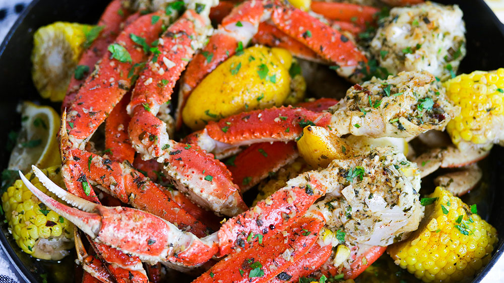

Crab Legs with Garlic Butter Sauce

Crab Recipe
This yummy recipe is sure to satisfy your cravings. It's scrumptious! Eat some!
Ingredients
- 1 lb snow crab clusters, thawed
- 1/4 cup butter
- 1/2 head garlic
- 1-1/2 teaspoons dried parsley
- 1/4 teaspoons black pepper
- 1/8 teaspoon salt
Steps
- Cut a slit, length-wise, into the shell of each piece of crab.
- Melt butter in a large skillet over medium heat. Add garlic and cook until translucent, 1 to 2 minutes.
Stir in parsley, pepper, and salt. Continue to heat mixture until bubbling.
- Add crab legs to the skillet; toss to coat with butter mixture. Simmer until completely heated through, 5 to 6 minutes.
- Eat that yummy crab!
Home